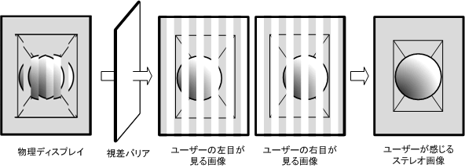
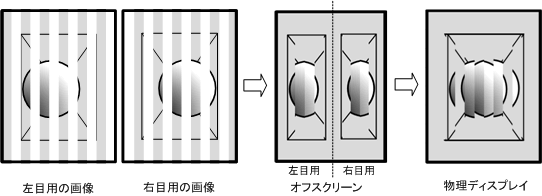
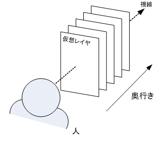

|
|||||||||
| 前のパッケージ 次のパッケージ | フレームあり フレームなし | ||||||||
参照先:
説明
| インタフェースの概要 | |
|---|---|
| Stereoscopicable |
Canvas のステレオ表示機能対応は、このインタフェースを実装したクラスによって有効になります。 |
| StereoscopicGraphics | ステレオ表示用グラフィックスを提供するインタフェースです。 |
| クラスの概要 | |
|---|---|
| StereoScope | ステレオ表示を制御するためのクラスを定義します。 |
| StereoscopicCanvas | ステレオ表示用キャンバスを定義します。 |
ステレオ表示機能に関連するクラスを定義します。
2D および 3D の描画のステレオ表示を実現するための機能を提供します。
ステレオ表示の機能は、「視差バリア方式」で実現します。 視差バリア方式とは、 右目用の画像と左目用の画像が水平方向に交互に描画された物理ディスプレイを「視差バリア」を通してみることにより、 右目は右目用の画像だけを左目は左目用の画像だけを認識するという仕組みです。

アプリケーションがステレオ表示の機能を使用するには、 このパッケージに定義されている以下のクラス・インタフェースを使用します。
ネイティブが視差バリアをサポートしていない場合、これらのクラス・インタフェースの各メソッドは、例外をスローします。
視差バリア方式では、1つの物理ディスプレイ上に同時に左目用の画像と右目用の画像を表示します。 左目用に使用できるピクセル数および右目用に使用できるピクセル数は、 水平方向に対してそれぞれ解像度比を除算した値となります。
たとえば、解像度比が
2 である場合、
240x480 ピクセルのディスプレイのステレオ表示では、論理的な画面サイズは 240x480 ピクセルですが、
左目用の画像および右目用の画像に使用できる物理的なピクセル数は、それぞれ 120x480 ピクセルとなります。
ステレオ表示の機能を使用して描画する際には、
水平方向の解像度比に対応した画像を左右それぞれについて用意する必要があります。
StereoscopicCanvas は水平方向のピクセルを間引いて自動的に画像解像度を変更する機能を提供しています。
アプリケーションプログラマは、ADF の DrawArea の 描画領域と同じサイズ
(ADF の DrawArea が設定されていない場合はデフォルト描画サイズ)の画面バッファに対して描画します。
その画像に対して、
StereoscopicCanvas が自動的に水平方向を間引き、
画像解像度を変更した結果をオフスクリーンに描画します。
既存のアプリケーションをステレオ表示用に変更する場合など、 この機能を使用することで画像変換を行う必要がなくなります。 ただし、予期しない画素の欠落により画質が劣化したり、 描画速度が低下する可能性があります。
アプリケーションプログラマは、ADF の DrawArea の 描画領域と同じサイズ
(ADF の DrawArea が設定されていない場合はデフォルト描画サイズ) の水平方向に、
解像度比を除算したサイズの画面バッファに対して描画します。
StereoscopicCanvas は画面バッファの画像に変更を加えずオフスクリーンに描画します。
アプリケーションが用意した画像をそのまま表示するため、 予期しない画素の欠落による画質の劣化はありません。 ただし、既存のアプリケーションをステレオ表示用に変更する場合などは、 画像変換を行う必要があります。

ステレオ表示の機能を使用して描画する際には、 画像が立体的に見えるように奥行きを考慮して、 左右それぞれの画像を用意する必要があります。
StereoscopicGraphics
の「奥行き」という概念により、アプリケーションプログラマは、
視線方向に向かって垂直に並んでいる仮想平面に対して平面図を描画するかのように画像を作成できます。
平面の背景は画面の奥のレイヤに、ユーザーが操作する画面は中央のレイヤに、 情報表示は手前のレイヤに描画するといった、 複数枚の平面画像を奥行きを持たせて表示したい場合などに使用します。

以下の２つの描画方式があります。 これらの方式を混在させて描画することもできます。
アプリケーションプログラマはこの機能を使用することで左右それぞれの画像を意識せずに従来の方法で描画できます。
アプリケーションプログラマは論理的にどの奥行きのレイヤーに対して描画するかを指定し、 あとは従来の Graphics オブジェクトでの描画と同様に、左右を考慮しないで 1 種類の画像を描画します。 その画像から StereoscopicGraphicsが、 自動的に奥行きを反映した左右それぞれの画像を作成し、実際の画面に描画します。
既存のアプリケーションをステレオ表示に変更する場合などは、 描画部分の変更・追加箇所が最小限で済むという利点があります。
アプリケーションプログラマが、左右それぞれの画像を作成して描画を完全に制御することができます。
アプリケーションプログラマが、奥行きに対する焦点を考慮し左右それぞれの画像を描画します。 StereoscopicGraphics がその画像を実際の画面に描画します。
アプリケーションプログラマが、 物体が奥から手前に移動するような立体的な動きを緻密に表現したい場合などに有効です。
解像度比が
2 となる端末では、
StereoscopicCanvas において、
ADF の DrawArea の横幅を偶数の値で設定する必要があります。
ADF の DrawArea の横幅を奇数の値で設定した場合、端末によっては正しい立体視は保証されないことがあります。Stereoscopicable を実装した Canvas においては、
StereoScope.getStereoscopicStyle()
の表示スタイル設定に対応した ADF の DrawArea の縦または横幅を偶数の値で設定する必要があります。
com.docomostar.opt.ui.j3d パッケージで提供されている 3D 描画機能を利用する場合は、
変換行列が 4096 の整数となるため、モデルや空間の大きさを設計する際に、この誤差を考慮する必要があります。
また、set3dPerspectiveOffset(float, float)
で設定された offset および range の値を、内部で 4096 倍した整数に変換して行列演算しますが、
この変換後の値が [-32767,32767] の範囲外となると、行列演算で特にオーバーフローが起こりやすくなります。
set3dPerspectiveOffset(float, float) に
offset および range の値を設定する際は、この変換後の値を考慮する必要があります。
簡単描画方式では、com.docomostar.opt.ui.eruption を利用する場合は、
呼び出された eruption の 3D 描画機能内で左右それぞれの画像を描画します。
一方、 com.docomostar.opt.ui.eruption 以外の 3D 描画機能を利用する場合、
左右それぞれの画像を描画するために、各 3D 描画機能が 2 回呼び出されます。
このため、簡単描画方式において com.docomostar.opt.ui.eruption 以外
の 3D 描画機能を利用する場合は、左右それぞれの画像に描画する分、
ステレオ表示機能を用いない 3D 描画に比べて、
描画速度が遅くなる可能性を留意する必要があります。
StereoscopicCanvas への3D描画(com.docomostar.opt.ui.eruption
パッケージまたは com.docomostar.ui.ogl パッケージ)
と2D描画との重ね合わせによる描画内容は保証されません。
なお、上記にcom.docomostar.opt.ui.j3d パッケージ /
com.docomostar.ui.graphics3d パッケージは含まれません。
|
|||||||||
| 前のパッケージ 次のパッケージ | フレームあり フレームなし | ||||||||
NTT DOCOMO,INC.
本製品または文書は著作権法により保護されており、その使用、複製、再頒布および逆コンパイルを制限するライセンスのもとにおいて頒布されます。NTTドコモ（その他に許諾者がある場合は当該許諾者も含めて）の書面による事前の許可なく、本製品および関連する文書のいかなる部分も、いかなる方法によっても複製することが禁じられます。フォントを含む第三者のソフトウェアは、著作権法により保護されており、その提供者からライセンスを受けているものです。
Sun、Sun Microsystems、Java、J2MEおよびJ2SEは、米国およびその他の国における米国 Sun Microsystems,Inc.の商標または登録商標です。サンのロゴマークは、米国 Sun Microsystems, Inc.の登録商標です。
FeliCaは、ソニー株式会社が開発した非接触ICカードの技術方式です。FeliCaは、ソニー株式会社の登録商標です。
「ｉモード」、「ｉアプリ／アイアプリ」、「ｉ-αppli」ロゴ、「DoJa」はNTTドコモの商標または登録商標です。
その他記載された会社名、製品名などは該当する各社の商標または登録商標です。